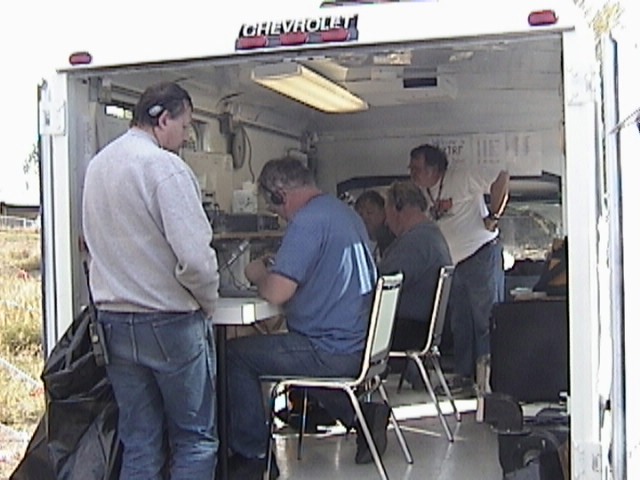

It’s 2 AM. The power’s out, and so is cell service.
Follow one request from a warming shelter to the people who can act on it, one radio hop at a time.
Earlier that evening, the county looked like this: lights on, phones working.
Emergency radio only works if people have practiced it. Here’s how our volunteers are called on, how a message moves, and what a normal month looks like.
A scenario Not a real event. It shows how the system is meant to work.
Follow one request from a warming shelter to the people who can act on it, one radio hop at a time.
Earlier that evening, the county looked like this: lights on, phones working.
Ice brings the lines down overnight. Cell towers run on batteries, then fall silent.
Radio to radio, through a repeater on a mountain, needs no cell tower and no internet.
A resident’s home oxygen concentrator has no power. The shelter manager needs to reach the county’s Emergency Operations Center: where the county coordinates its response., and there’s no phone to call it on.
The Auxiliary Communications: Spokane County Emergency Management’s own volunteer radio program. Members pass a county background check. member assigned to the shelter writes the request on an The standard message form of the Incident Command System. It travels by voice, on paper or by radio email., the same message form the agencies use.
A scenario. The message is illustrative.
The shelter’s radio operator calls The operator who runs a net, calling stations in turn so every message is heard. Members take turns, and new net controls are coached. on the The group’s call sign and repeater, honoring Ira “Dean” Bula. 147.300 MHz, +600 kHz offset, 100 Hz tone. repeater, 147.300 MHz, and reads the message word for word.
Net control keeps the frequency orderly. Operators copy messages word for word, and everything is logged.
The repeater’s call sign honors Ira “Dean” Bula. The W7GBU story
In the county radio room, another volunteer copies the message, logs it on an The communications log: every message sent or received, kept by the radio operator. and hands it to the EOC.
The EOC acts on it through its own channels. When the county sends word to a hospital, a volunteer on the hospital team copies it there by radio.
| Time | From | To | Subject |
|---|---|---|---|
| 0214 | Shelter | EOC Logistics | Resident needs oxygen |
The request went where it needed to go, and every hop is on paper: the ICS-213 from the shelter, the log in the radio room.
Every hop on this path is a trained volunteer, not a machine.
Earlier that evening: power on, phones working.
None of it depends on luck.
It depends on volunteers who practiced on ordinary Tuesdays, so a real night feels familiar.
Most of the year is practice: a net every week, a message form every other week, an exercise most months. Here’s each part in detail.
A handheld or mobile radio, a repeater on a mountain, and a trained operator at the other end. That’s the core. Everything else is a backup to it.
The red line is the everyday path; dashed lines are the backups. At every hop, net control keeps the frequency orderly, operators copy messages word for word, and everything is logged.
A “net” is an organized on-air meeting run by a net control station. Ours is a directed net: net control calls each group in turn, so everyone gets heard. It’s how we keep radios, antennas and habits in working order.
What happens, in order, from the current net script (version 2026-03-04).
7:55 PMNet control announces that the net starts in about five minutes. On Winlink nights: “get paper and pencil.”
8:00 PMNet control opens the net and reads its purpose: coordination for the group, and a weekly emergency-net training session to test equipment and check propagation.
“Stations with emergency or priority traffic may break in at any time.”
Officials check in: the county emergency coordinator, county Emergency Management staff, the assistant emergency coordinators, ARRL District and Section officials, and officials from surrounding counties.
Members check in.
Visitors check in: call sign (slowly and phonetically), name and location.
Your cue, if you’re visiting
Simplex, no-tone and cross-band stations, heard on the repeater’s output, then any relays.
Listed traffic is handled, then late or missed check-ins, “Alpha through Zulu.”
Winlink nights only: the Winlink assignment is given.
Last call for traffic, and net control closes the net.
Listen in. No license needed to listen.
The net: every Tuesday, 8:00 PM. Net control rotates each week; the schedule is on the groups.io calendar (opens groups.io).
Visitors, this is your cue
Licensed and curious? Wait for the call for visiting stations, then give your call sign, name and location. That’s it.
Not licensed? Listen along: any radio or scanner that receives 147.300 MHz will do.
Net control rotates
Members take turns as net control, and the Net Manager coaches anyone taking a first turn. At the ACS Radio Operator level, serving as net control once a year is a requirement.
Pause for the repeater
Net control leaves gaps so the repeater can drop and cross-band stations can break in. On W7GBU generally: identify at the start, every ten minutes and when you clear, and break in with just your call sign (“emergency traffic” if it is).
Some Tuesdays change shape, and a few other nets run through the week.
| Net | When | Where | Notes |
|---|---|---|---|
| Winlink night | 2nd and 4th Tuesdays, during the 8 PM net | W7GBU | A Winlink assignment is given on the net; responses go by radio email that evening (see Winlink). |
| Simplex net | In months with a 5th Tuesday, 8 PM | Starts on the ARES-ACS simplex frequency, then moves to W7GBU | No repeater: each station reads back the stations it heard, which shows who can reach whom without it. |
| ACS GMRS net | 3rd Tuesday, 7:30 PM | WRCY281 GMRS repeater (GMRS channel 7) | For county volunteers with GMRS licenses. |
| 0730 Bunch | Weekdays, 7:30 AM | W7GBU, 147.300 | An informal round table started by Dean Bula, W7GBU. |
| Section nets (EWSEN) | Mondays | VHF 6:15 PM on the KBARA linked repeaters; HF 6:45 PM on 3.985 MHz; Winlink check-ins 5:00 to 7:00 PM | Run by the Eastern Washington Section (opens ag7qp.com). |
The same volunteers wear two hats. Which hat they’re wearing decides who can call on them.
Spokane County Emergency Management is the agency having jurisdiction. When it needs amateur radio support, it activates ACS members, the volunteers who have passed the county background check. Only activated ACS members work inside emergency operations centers, incident command posts, hospitals and shelters, where sensitive information is handled.
Before volunteers serve a government agency, the county obtains a state mission number. That number is what ties an activation to Washington’s emergency-worker protections.
Amateur Radio Emergency Service: the ARRL’s national volunteer program, open to any licensed ham. members don’t need a declared emergency. They can serve community events, run training and support the National Weather Service “without approval from anyone,” and they support the Red Cross under a national ARRL agreement.
If something big happens and there are no instructions, the Eastern Washington Section’s Standing Order 1b applies. It’s an information-gathering routine, not a deployment: no one is asked to leave home or travel.
Agencies request support through Spokane County Emergency Management. For served agencies
Members follow four readiness levels. They describe what to do. They are not a public status, and this site never shows a “current” level.
InactiveGreen
Normal conditions; nothing expected.
AlertYellow
Something might happen: a tornado, severe thunderstorm, flooding or ice storm.
Stand byOrange
Something has happened, and full activation is likely.
DeployRed
Full emergency communications.
After the event: served agencies and the emergency coordinator release members. Once every station is secured and home, the level returns to Green. Leaders hold an action review within 72 hours.
The Eastern Washington Section’s standing order (January 16, 2026) tells every ARES, AUXCOMM and Radio Amateur Civil Emergency Service: the FCC provision that lets hams operate for government in emergencies. In Spokane County it is now part of ACS. group what to do when normal communications may be disrupted and there are no instructions yet.
“Nothing in this order suggests that anyone becomes first responders if a disaster strikes. ARES is an auxiliary support function.”
ARES-ACS is an auxiliary support function. Its volunteers are not first responders; they back up the agencies that are.
In an emergency, a message that is garbled, lost or unrecorded is worse than no message. So we use the same forms the agencies use, read them word for word, and log everything.
The ICS-213 is the standard message form of the Incident Command System. Anyone can start one. It travels by voice, on paper or inside Winlink. The sample beside this shows what goes in each block.
Related forms
Precedence
Messages are handled in this order. With equal precedence, net control clears the stations with the fewest messages first.
A sample showing the blocks, not a real message. Names need at least a first initial and last name; L is local time, Z is UTC.
If it went over the air, it’s written down.
Every message sent or received, kept by the radio operator during all ACS radio operations. Winlink Express can build it automatically.
What you did and when, kept during exercises and activations.
Winlink sends email-style messages, with attachments and forms, over radio. It works with or without the internet, and it can use the internet (Telnet) when that’s all you have.

Next practice assignment
Tue, Oct 13, 5:00 to 9:00 PM
Submit a Did You Feel It report. Be sure to mark it as an exercise.
Answer on: Did You Feel It (DYFI) report. Send to NV2Z and AG7QP.
Most of our year is practice. Some of it is big and public, like the national Simulated Emergency Test: the ARRL’s annual national exercise, held every October. in October; most of it is a Tuesday night or a Saturday morning.

| Exercise | What it is | When |
|---|---|---|
| Simulated Emergency Test (SET) | ARRL’s national exercise. The old county plan called it “the largest event sponsored by Spokane County ARES/RACES itself.” | Every October |
| Great ShakeOut | Members send a USGS “Did You Feel It?” report by Winlink. | October |
| State COMMEX | Washington’s statewide communications exercise. | October |
| EOC-to-EOC exercises | Stations at sites across the county pass traffic to emergency operations centers and to the State EOC at Camp Murray. Held on 5th Saturdays in past years. | As scheduled |
| Joint exercises | With partner agencies, such as this year’s exercise with the Washington State Department of Transportation. | As scheduled |
| Winlink assignments | Short practice messages on the 2nd and 4th Tuesdays. | Twice a month |
Race courses and parade routes are where most members first work a real net: many stations, a busy frequency and a net control keeping order. The county plan treated these events as primary training for working alongside fire and law enforcement.
Bloomsday and the Lilac Festival Armed Forces Torchlight Parade (May), plus fun runs, bicycle races and Climb for the Cure.
Adapted from the Section’s tips, Preparing for public-service communications.
How to volunteer: the AEC for public events (NV2Z) coordinates members for Bloomsday and the parade; the volunteer contact for Climb for the Cure is NZ2S.
In general terms, because some of these places handle sensitive information.

During the Gray and Oregon Road fires in August 2023, the group provided a mobile network unit for the incident command post and the Disaster Assistance Center.
Everyone starts by checking into the net. From there, people find the work that suits them. The first four are the hops in the story.
Pass messages from a shelter, staging area or event post.
On the way: ICS-213 and ICS-309; a go-kit.
Run a net: call check-ins, keep order, move traffic.
On the way: coached by the Net Manager; the NCS guide. Required yearly at the ACS Radio Operator level.
Staff the county radio room during an activation.
On the way: Comm Room and trailer familiarization, then competency (a Radio Operator requirement).
Keep backup hospital communications ready.
On the way: orientation; HIPAA.
Work a race course or parade route.
On the way: a short-term go-kit; the event briefing.
Send forms and reports by radio email.
On the way: the Winlink workshop; assignments. Required yearly at ACS Senior Radio Operator.
Report severe weather to the National Weather Service.
On the way: NWS spotter training (opens weather.gov).
Set up the trailer and Mobile Network Units; keep equipment and programming ready.
On the way: MNU setup and take-down.
Tell the group’s story to the media and the public.
On the way: ARRL PR-101 (optional).
Honest numbers, from the county’s ACS task book. ARES and ACS members train side by side.
New members also complete four free online FEMA courses and the ARRL Basic EmComm course in their first year. The training path
Start by listening on a Tuesday night. When you’re ready, the path to joining is four short steps.